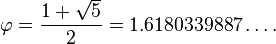

Red: Concepts
The Golden Ratio and Rule of Thirds
In this section, you'll see the prettiest curve, square, and rectangle you'll ever see. I know this because the ratios that make it up show up everywhere. That's the Golden Ratio, which makes up the Golden Spiral, Square, and Rectangle respectively. The actual mathematical ratio:

Don't worry about that. Just know that all through design there is this thing. It looks nice. So if you're going to split things into two sections, maybe consider breaking it apart the way the golden rectangle and square fit together.
The second idea is about sectioning out as well. The Rule of Thirds. Humans like having a right, a center, and a left. Or a top, center, and bottom. I don't know why. Maybe it's because we grew up on plains, and like to scan the horizon or up a mountain. The Rule of Thirds also follows the Golden Ratio. Have a little section, and then two sections of equal size.
Symmetry, Assymetry
Symmetry is when both sides of a thing look the same, centered text is symmetrical to a degree. Assymetry is when both sides of a thing don't match. This site is assymetrical. The Golden Rectangle/Square combo is assymmetrical. But that's a good thing! Sometimes, we don't need everything to be centered and equal on all sides. Look at your favorite websites, what is symmetrical? Assymetrical? Here's the important bit: It doesn't matter if something is symmetrical/assymetrical. What matters is balance.
Balance
Balance is about how much the eye is drawn to part or another. It's just like balancing in the real world. A large shape on one side can be balanced by another large shape on another. Or a group of small shapes can be balanced by a slightly larger shape on another side. Keep in mind, the eye is a mechanism. It follows a z-pattern. Top left to top right, diagonal to bottom left, then to bottom right. You can change how the eye works by making things appear in that path. Think about balancing graphics like balancing weight.